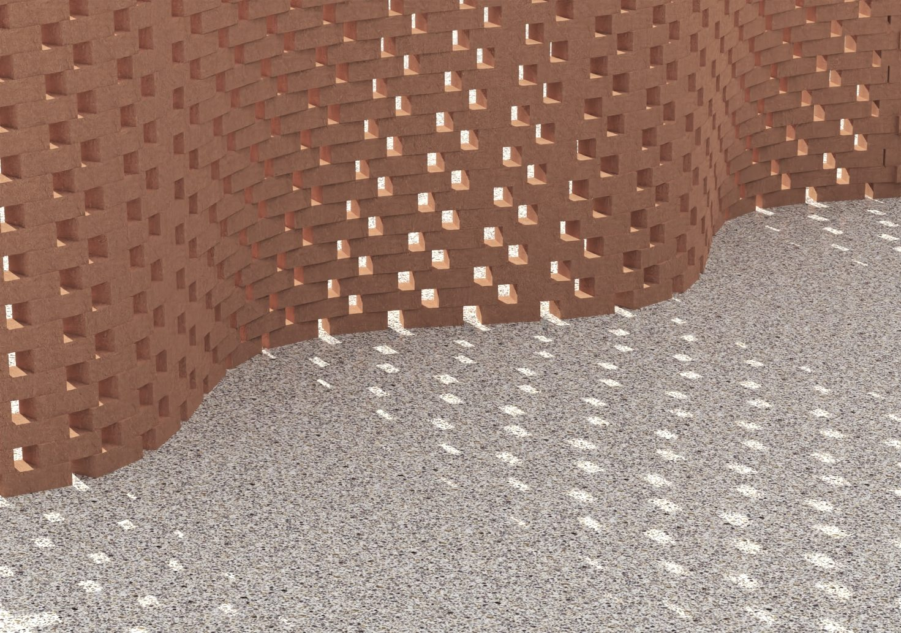
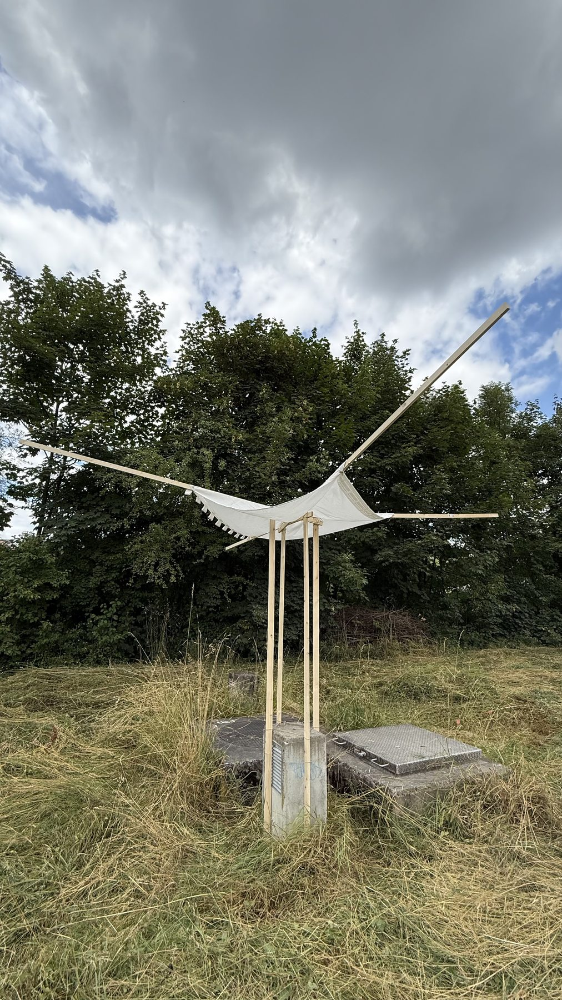
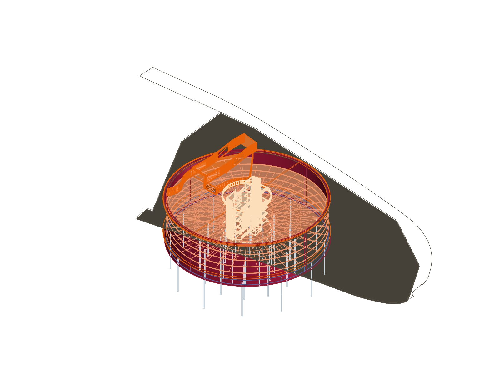
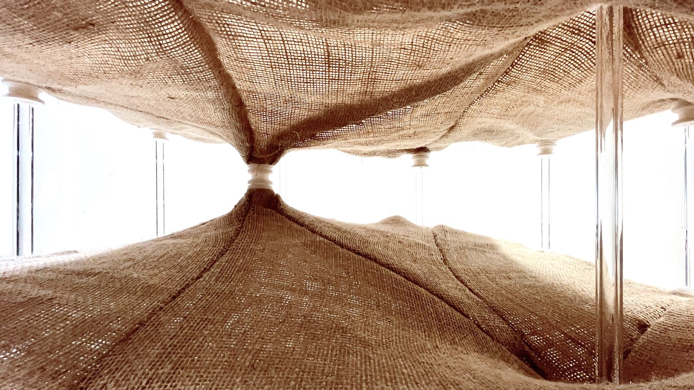
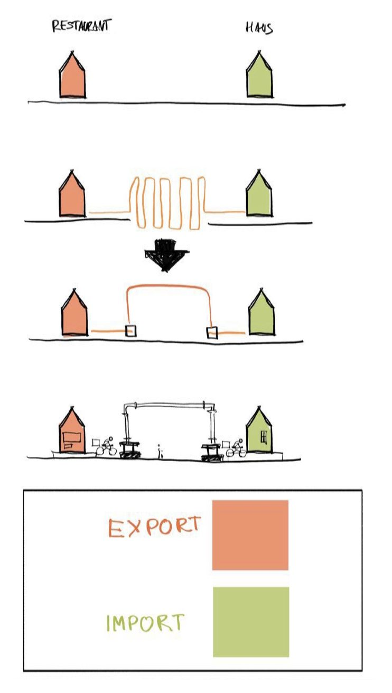

I.A.B
Ivan Bagaturiya
Architect
Full portfolioThis is the full portfolio of Ivan Bagaturiya.

I.A.B
Architect
Full portfolioThis is the full portfolio of Ivan Bagaturiya.

0056 / 01
2025
This project shows how a parametric tool can keep a sinusoidal brick wall buildable before the brick size is known.
Skills used


0055 / 02
2025
This project shows how ten slats, a rope, and a sheet of textile can become a lighthouse in 45 minutes.
Skills used


0054 / 03
2025
This project shows how computational design can turn an underground parking garage into a concert hall.
Skills used


0052 / 04
2024
This project shows how mycelium and parametric form-finding can turn soft textile into a structural vault.
Skills used



0051 / 05
2024
This project shows how parametric architecture can turn a noisy parking lot into an adaptable urban stage.
Skills used


0050 / 06
2024
This project shows how 36 analog exposures can turn a changing room into a continuous archive of space, time, and memory.
Skills used



0015 / 07
2022
what if we would use the infrastructure as storage space? and what if this infrastructure would be our facades?
Skills used


0013 / 08
2020
Project description forthcoming.
Skills used


0010 / 09
ongoing
An evolving aerial archive that reveals familiar landscapes from an unfamiliar point of view.
Skills used


 Want to see more?
go to bagaturiya.com
Want to see more?
go to bagaturiya.com